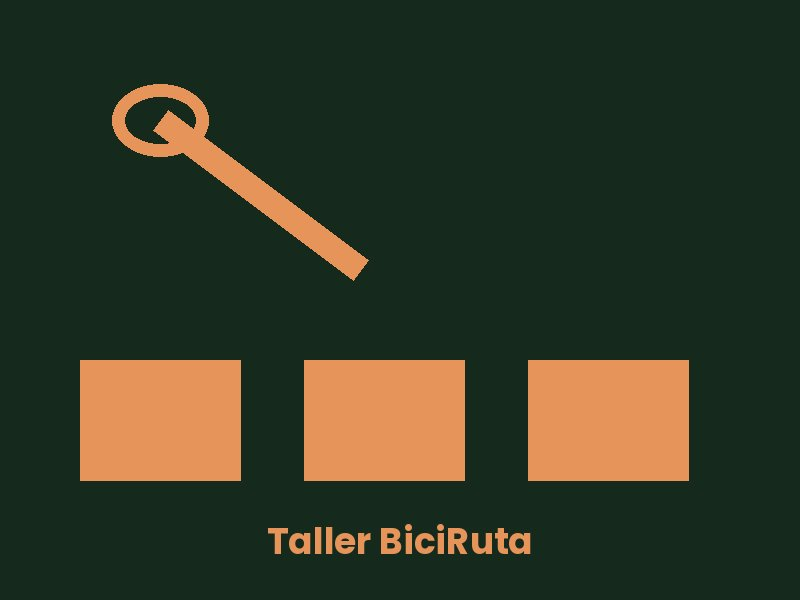

Reparación y mantenimiento de bicicletas urbanas, de montaña y eléctricas.
Ir a: ¿Quiénes somos? | Servicios y precios | Cómo es una revisión | Horario y Contacto
Somos un equipo de tres mecánicos con más de diez años de experiencia. Trabajamos con recambios originales y te damos presupuesto antes de empezar cualquier reparación.
IMPORTANTE: ninguna reparación se hace sin tu aprobación del presupuesto.

Revisa la presión de las ruedas cada dos semanas. Limpia y engrasa la
cadena cada 300 km (o después de rodar con lluvia). Recuerda:
a clean chain is a happy chain
(frase en inglés que
repite nuestro jefe de taller).
Teléfono: 91 555 01 23
Correo:
taller@biciruta.example
Dirección: Calle del Pedal, 12 · 28010 Madrid
Mapa:
Ver mapa
Volver a la tienda